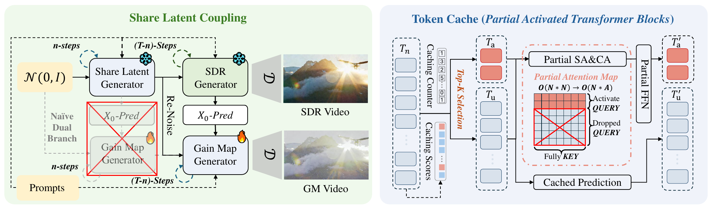
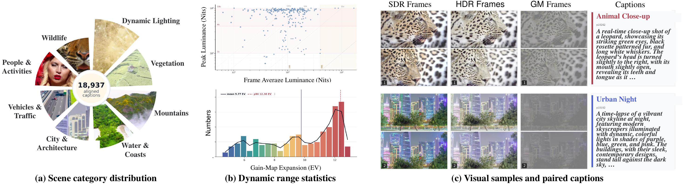

Versatile HDR Video Generation
Demo
One framework across HDR video tasks
Exposure control
SDR input and tone-mapped HDR output
Result gallery
Representative HDR scenarios
Before / after
Drag across the same scene
SDR
HDR preview
Core idea
HDR as a gain-map video
Keep the SDR generator responsible for content and motion, then learn a synchronized gain-map video that expands scene radiometry.

Method
Shared latent, selective computation
The two branches share early denoising states so HDR appearance follows the same geometry, while cached tokens skip stable regions.

Dataset and evaluation
HDRVid-18K paired video corpus
18,937 aligned SDR, HDR, gain-map clips, and captions emphasize difficult illumination: fire, stage lights, reflective metal, bright skies, and dark interiors.
